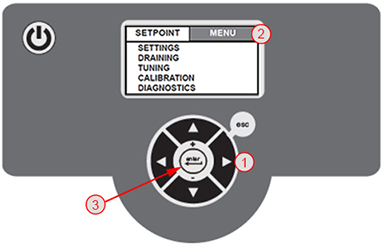
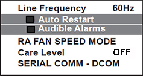

The PET chiller settings configure the system for the environment,
as well as set levels for alarms and to shut down the system to prevent
damage or failure. The warning setting initiates an alarm while the
fault setting initiates a system shut down.
Procedure
To set the PET Chiller parameters, press the right arrow (1) to toggle to the MENU option (2), and press enter (3).
Figure 1. Selecting MENU Option

Explanation of button functions on PET Chiller:
To change a setting, highlight the
setting, then press the enter button.
When the highlighted setting flashes,
use the up or down arrow to scroll through the setting options.
Once the desired option displays,
press enter to accept the change and stop the
flashing. When all the desired changes are made, use the left arrow or the esc (escape) button to return to the
SETTINGS display.
Press the down arrow to select SETTINGS.
Note
The controller can only display six lines at a time. Use
the up and down arrows to scroll through
and highlight each line.
Select UNITS to set the values for Temperature,
Pressure, and Flow. Options:
Temperature: Celsius (°C), the
default, or Fahrenheit (°F)
Pressure: Pounds per Square Inch (PSI),
the default, Bar, or kPa
Flow: Gallons per Minute (GPM), the
default, or Liters Per Minute (LPM)
Select the Setpoint for 18°C (64.4°F).
Leave the TEMPERATURE and PRESSURE settings at the factory defaults.
Set the FLUID LEVEL settings as follows:
Low Warning: 15%
Low Fault: 10%
Set the FLOW settings for High Fault, High Warning, Low Warning, and Low Fault:
High Fault: 28 GPM (106 LPM)
High Warning: 24 GPM (91 LPM)
Low Warning: 5 GPM (19 LPM)
Low Fault: 4.5 GPM (17 LPM)
Set the Line Frequency to 50 Hz or 60 Hz (the default), depending on the location.
Make sure Auto Restart and Audible Alarms are both set to ON
(indicator in front of text is filled in for both as shown below).
Select the setting and press enter to turn
the setting to ON.
Figure 2. Setting Auto Restart and Audible Alarms

Set Care Level to OFF.
Note
The filters and diffuser must be cleaned regularly with
PET chiller coolant. Do not use tap water to clean the filters and
diffuser. Refer to the manufacturer’s manual for cleaning instructions
and the PM Checklists for schedule.
Set the SERIAL COMM to DCOM with these parameters:
Serial Type: RS-232
Baud Rate: 9,600
Parity: None
Data Bits: 8
Stop Bits: 1
Set the current date and time at the mm/dd/yy hh:mm:ss setting. Each variable for date and time is set separately.
Note
The date format cannot be changed; time is set in a 24-hour
format.